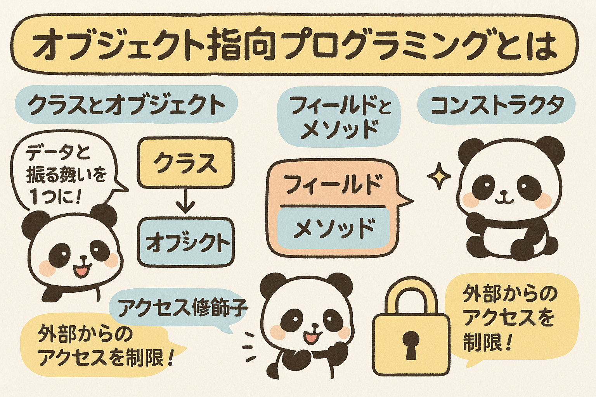

この第3章では、Javaのオブジェクト指向プログラミングの基礎を学習します。クラスとオブジェクトの概念から始め、フィールド、メソッド、コンストラクタ、アクセス修飾子、カプセル化など、オブジェクト指向の重要な概念をわかりやすく解説します。
オブジェクト指向プログラミング（OOP）は、ソフトウェア開発の主要なパラダイムの一つで、Javaは完全なオブジェクト指向言語として設計されています。この章では、オブジェクト指向の基本概念と、Javaでの実装方法を学びます。
オブジェクト指向プログラミングは、データ（属性）とそのデータを操作する機能（メソッド）をひとまとめにした「オブジェクト」を基本単位とするプログラミングアプローチです。このアプローチにより、コードの再利用性、保守性、拡張性が向上します。
データと操作をひとつのユニットにまとめ、内部の詳細を隠蔽することで、安全で管理しやすいコードを実現します。
既存のクラスの特性を新しいクラスが引き継ぐことができ、コードの再利用性を高めます。
同じインターフェースを持つオブジェクトが異なる実装を持つことができ、柔軟なコード設計が可能になります。
複雑なシステムの本質的な特性だけを表現し、不要な詳細を隠すことで、複雑さを管理します。
オブジェクト指向プログラミングの利点：
クラスとオブジェクトは、オブジェクト指向プログラミングの中心的な概念です。クラスはオブジェクトの設計図やテンプレートであり、オブジェクトはそのクラスのインスタンス（実体）です。
クラスは関連するデータ（フィールド）と操作（メソッド）をまとめた定義です。Javaでは、クラスは以下のように定義します：
public class Car {
// フィールド（データ）
String model;
String color;
int year;
// メソッド（操作）
void start() {
System.out.println("エンジンを始動します。");
}
void stop() {
System.out.println("エンジンを停止します。");
}
}
オブジェクトは、クラスから作成される実体（インスタンス）です。クラスが「車」という概念の設計図なら、オブジェクトは「青いトヨタのカローラ」など具体的な車のことです。Javaでオブジェクトを作成する方法：
// Carクラスからオブジェクトを作成
Car myCar = new Car(); // newキーワードを使ってインスタンス化
// オブジェクトのフィールドに値を設定
myCar.model = "カローラ";
myCar.color = "青";
myCar.year = 2023;
// オブジェクトのメソッドを呼び出す
myCar.start(); // 出力: エンジンを始動します。
図3.1: クラスとオブジェクトの関係
以下の要件を満たすクラスとオブジェクトを作成してみましょう：
ヒント: プログラムのメインメソッド内で複数のオブジェクトを作成し、それぞれに異なる値を設定します。
クラスの主要な構成要素であるフィールドとメソッドについて、より詳しく見ていきましょう。
フィールドはクラスの状態（データ）を表すクラス内の変数です。フィールドは以下のように宣言します：
public class Person {
// フィールド宣言
String name; // 名前
int age; // 年齢
double height; // 身長
boolean isStudent; // 学生かどうか
static int personCount; // すべてのPersonオブジェクトで共有する静的フィールド
}
int age = 20;）メソッドはクラスの振る舞い（操作）を定義する関数です。メソッドは以下のように宣言します：
public class Person {
String name;
int age;
// メソッド宣言
void introduce() {
System.out.println("こんにちは、私の名前は" + name + "です。" + age + "歳です。");
}
int getBirthYear() {
return 2023 - age; // 現在の年から年齢を引いて生年を計算
}
void celebrateBirthday() {
age++; // 年齢を1増やす
System.out.println("お誕生日おめでとう！" + age + "歳になりました。");
}
static void showPersonCount() {
System.out.println("現在の人数: " + personCount);
}
}
void setAge(int newAge) { age = newAge; }）person.introduce()）Person.showPersonCount()）Javaでは以下の命名規則に従うことがベストプラクティスとされています：
以下の要件を満たす BankAccount クラスを作成してみましょう：
コンストラクタは、オブジェクトの生成時に呼び出される特別なメソッドです。コンストラクタを使用して、オブジェクトの初期状態を設定できます。
public class Student {
String name;
int id;
int grade;
// デフォルトコンストラクタ
public Student() {
name = "名前なし";
id = 0;
grade = 1;
System.out.println("デフォルトコンストラクタが呼び出されました");
}
// パラメータ付きコンストラクタ
public Student(String studentName, int studentId, int studentGrade) {
name = studentName;
id = studentId;
grade = studentGrade;
System.out.println("パラメータ付きコンストラクタが呼び出されました");
}
// 一部のパラメータだけを指定するコンストラクタ
public Student(String studentName) {
name = studentName;
id = 0;
grade = 1;
System.out.println("名前だけのコンストラクタが呼び出されました");
}
void introduce() {
System.out.println("私の名前は" + name + "、学籍番号は" + id + "、" + grade + "年生です。");
}
}
// デフォルトコンストラクタを使用
Student student1 = new Student();
student1.introduce(); // 出力: 私の名前は名前なし、学籍番号は0、1年生です。
// パラメータ付きコンストラクタを使用
Student student2 = new Student("山田太郎", 12345, 2);
student2.introduce(); // 出力: 私の名前は山田太郎、学籍番号は12345、2年生です。
// 名前だけのコンストラクタを使用
Student student3 = new Student("佐藤花子");
student3.introduce(); // 出力: 私の名前は佐藤花子、学籍番号は0、1年生です。
クラスにコンストラクタが明示的に定義されていない場合、Javaは自動的にパラメータを持たないデフォルトコンストラクタを提供します。しかし、一つでもコンストラクタを明示的に定義すると、自動生成されるデフォルトコンストラクタは提供されなくなります。
同じクラス内に複数のコンストラクタを定義することを「コンストラクタのオーバーロード」と呼びます。パラメータリスト（数、型、順序）が異なる必要があります。
Exercise 3.2で作成したBankAccountクラスに以下のコンストラクタを追加してみましょう：
メインメソッドで各コンストラクタを使用してオブジェクトを作成し、showBalance()メソッドで結果を確認してください。
アクセス修飾子は、クラス、フィールド、メソッド、コンストラクタなどのアクセス範囲（可視性）を制御する修飾子です。Javaには4種類のアクセス修飾子があります。
どこからでもアクセス可能。最も制限の少ないアクセス修飾子。
可視範囲: 同じクラス、同じパッケージ、異なるパッケージのサブクラス、異なるパッケージの非サブクラス（すべて）
同じパッケージ内と、異なるパッケージの子クラスからアクセス可能。
可視範囲: 同じクラス、同じパッケージ、異なるパッケージのサブクラス
アクセス修飾子を指定しない場合のデフォルト。同じパッケージ内のみからアクセス可能。
可視範囲: 同じクラス、同じパッケージ
同じクラス内からのみアクセス可能。最も制限の厳しいアクセス修飾子。
可視範囲: 同じクラスのみ
図3.2: アクセス修飾子の可視範囲
public class Person {
// 異なるアクセス修飾子を持つフィールド
public String name; // どこからでもアクセス可能
protected int age; // 同じパッケージと子クラスからアクセス可能
double height; // デフォルト (package-private): 同じパッケージからのみアクセス可能
private double weight; // 同じクラス内からのみアクセス可能
// 異なるアクセス修飾子を持つメソッド
public void introduce() {
System.out.println("私の名前は" + name + "です。");
}
protected void showAge() {
System.out.println("私は" + age + "歳です。");
}
void showHeight() {
System.out.println("身長は" + height + "cmです。");
}
private void showWeight() {
System.out.println("体重は" + weight + "kgです。");
}
// privateフィールドにアクセスするためのpublicメソッド
public void showDetails() {
introduce();
showAge();
showHeight();
showWeight(); // privateメソッドは同じクラス内から呼び出し可能
}
}
public（他のクラスから使用するため）private（カプセル化のため）public、内部実装のみで使用するものはprivatepublic（オブジェクトの生成を可能にするため）「最小特権の原則」に従い、必要最小限のアクセス権限を与えることがベストプラクティスです。
これまでに作成したBankAccountクラスを修正し、適切なアクセス修飾子を適用してみましょう：
accountNumber、ownerName、balance）をprivateに変更deposit、withdraw、showBalance）をpublicに変更totalAccountsをprivateに変更getTotalAccountsをpublicに変更修正後のクラスをコンパイルしようとすると、エラーが発生するかもしれません。なぜエラーが発生するのか、次のセクションで学ぶカプセル化と関連しています。
カプセル化は、データ（フィールド）と操作（メソッド）を単一のユニット（クラス）にまとめ、内部実装の詳細を隠蔽する概念です。カプセル化により、クラスの内部実装を変更しても、そのクラスを使用するコードに影響を与えずに済みます。
privateに設定し、直接アクセスを防ぐpublicメソッド（getterとsetter）を提供するpublic class Employee {
// privateフィールド
private int id;
private String name;
private double salary;
// コンストラクタ
public Employee(int id, String name, double salary) {
this.id = id;
this.name = name;
this.setSalary(salary); // setter経由で値を設定（検証のため）
}
// getterメソッド
public int getId() {
return id;
}
public String getName() {
return name;
}
public double getSalary() {
return salary;
}
// setterメソッド（データ検証あり）
public void setId(int id) {
if (id > 0) {
this.id = id;
} else {
System.out.println("エラー: 社員IDは正の値である必要があります。");
}
}
public void setName(String name) {
if (name != null && !name.isEmpty()) {
this.name = name;
} else {
System.out.println("エラー: 名前は空にできません。");
}
}
public void setSalary(double salary) {
if (salary >= 0) {
this.salary = salary;
} else {
System.out.println("エラー: 給与は負の値にはできません。");
}
}
// その他のメソッド
public void raiseSalary(double percentage) {
if (percentage > 0) {
this.salary += this.salary * percentage / 100;
System.out.println(name + "の給与が" + percentage + "%上昇しました。");
} else {
System.out.println("エラー: 昇給率は正の値である必要があります。");
}
}
}
カプセル化と情報隠蔽（information hiding）は密接に関連した概念ですが、微妙な違いがあります：
Javaでは、privateフィールドとpublicメソッドを使用することで、両方の概念を実現しています。
Exercise 3.4で修正したBankAccountクラスに、以下の改良を加えてカプセル化を完全に実装してみましょう：
accountNumber、ownerName、balance）のgetterメソッドを追加accountNumber: 6桁の文字列である必要があるownerName: nullや空文字列は不可balance: 負の値は不可getterとsetterメソッドは、カプセル化を実現するための重要な手段です。これらのメソッドを通じて、privateフィールドの値を安全に取得・設定できます。
getName()、getAge()isActive()）setName(String name)、setAge(int age)public class Person {
private String name;
private int age;
private boolean active;
// getterメソッド
public String getName() {
return name;
}
public int getAge() {
return age;
}
public boolean isActive() { // boolean型のgetter
return active;
}
// setterメソッド（データ検証あり）
public void setName(String name) {
if (name != null && !name.isEmpty()) {
this.name = name;
} else {
System.out.println("エラー: 名前は空にできません。");
}
}
public void setAge(int age) {
if (age >= 0) {
this.age = age;
} else {
System.out.println("エラー: 年齢は負の値にはできません。");
}
}
public void setActive(boolean active) {
this.active = active;
}
}
// Personクラスのオブジェクトを作成
Person person = new Person();
// setterを使ってフィールドに値を設定
person.setName("山田太郎");
person.setAge(25);
person.setActive(true);
// getterを使ってフィールドの値を取得
System.out.println("名前: " + person.getName());
System.out.println("年齢: " + person.getAge());
System.out.println("アクティブ: " + person.isActive());
getFullName()で名前と姓を結合）。以下の要件を満たすProductクラスを作成してみましょう：
id、name、price、quantityを持つgetTotalValue()を追加する（price × quantityを返す）メインメソッドでProductオブジェクトを作成し、getterとsetterを使ってフィールドの値を操作してみましょう。
以下の問題に答えて、第3章の内容の理解度を確認しましょう。
問題1: 次のうち、オブジェクト指向プログラミングの主な特徴はどれですか？（複数選択可）
問題2: クラスとオブジェクトの関係について、最も正しい説明はどれですか？
問題3: 次のうち、Javaのコンストラクタについて正しい説明はどれですか？（複数選択可）
問題4: 次のうち、アクセス修飾子privateが付いたフィールドまたはメソッドにアクセスできるのはどれですか？
問題5: 次のJavaコードにおいて、カプセル化が正しく実装されているのはどのクラスですか？
この章では、オブジェクト指向プログラミングの基本概念について学びました。次の章では、これらの概念をさらに発展させ、継承やポリモーフィズムなど、オブジェクト指向プログラミングのより高度なトピックについて学んでいきます。
練習問題に取り組み、自分でクラスを作成してみることで、この章で学んだ概念をしっかりと身につけましょう。
以下のミニプロジェクトに取り組んで、オブジェクト指向プログラミングの概念を実践してみましょう：